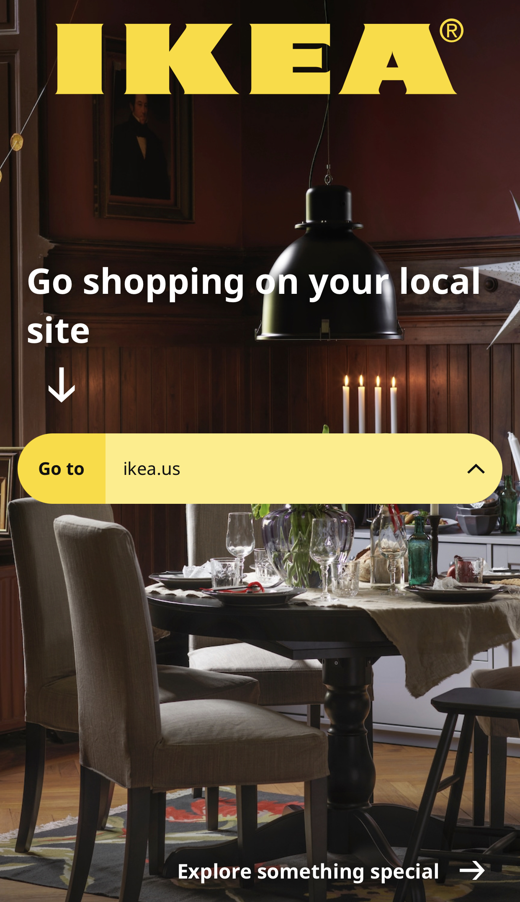
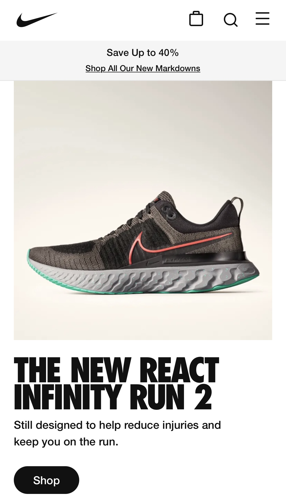
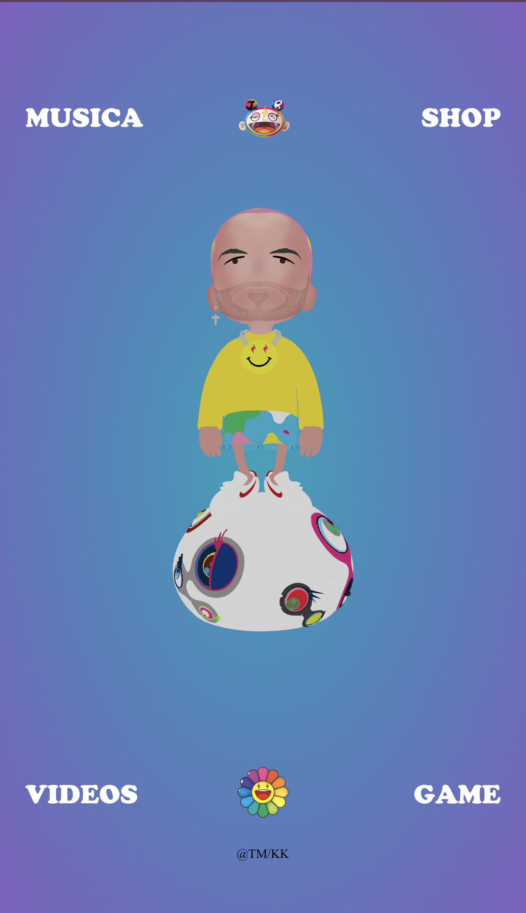

Visual Hierarchy
Ikea.com
Ikea uses Visual Hierarchy to guide their users through their website. Their page is simple, and yet it catches your attention right away. The first thing a visitor sees when entering Ikea's website is their bright, iconic logo. From there, your eyes slowly begin to drift down with the help of a white arrow, until you land upon the bright button that takes you to their main page.
Fitt's Law
Nike.com
Nike does a great job of using Fitt's Law within their website. Fitt's Law states that the bigger and closer an object is, the easier it is to use. Nike does this by first showing you one of their newest, and most popular pairs of shoes. After you've had time to examine it, they guide you down to the big, black "Shop" button. Whether you're using one or two hands to hold your phone, it's nicely placed so that you can tap it and begin shopping right away.
White Space
JBalvin.com
J-Balvin also does a great job of using white space on the website. His website is simple, yet colorful and fun. A cartoon version of J-Balvin is right in the center of the page when you first enter. In each corner of the page there is something to do while being nicely separated by white space as to not overwhelm visitors.